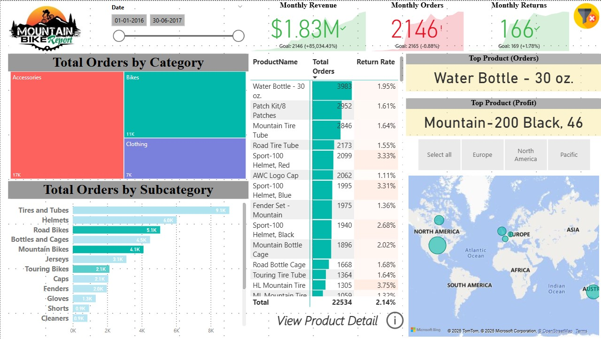
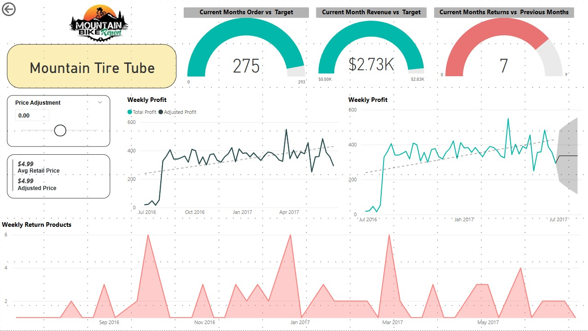
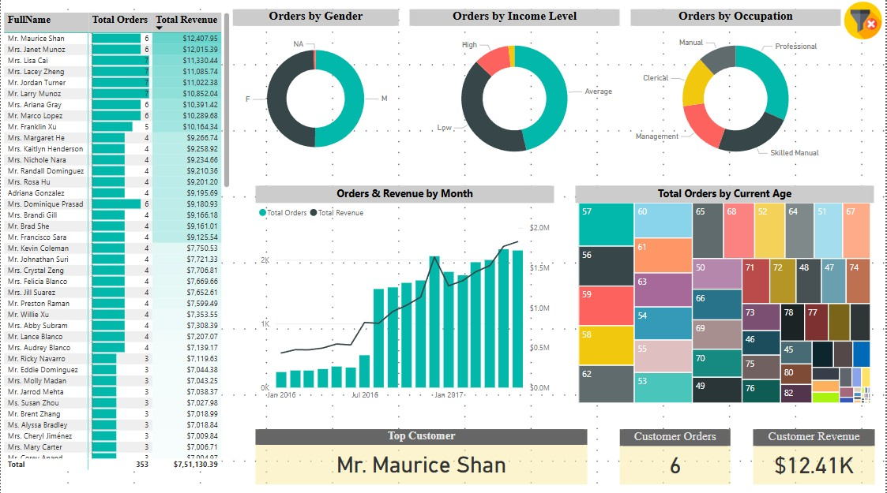
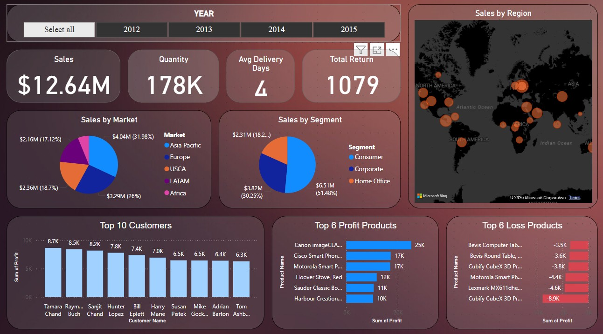
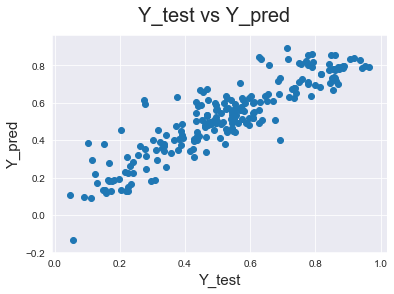
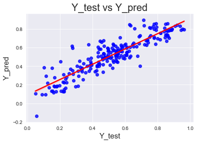

ADVENTURE WORK REPORT
Summary
The Mountain Bike Report dashboard provides insights into sales from January 1, 2016, to June 30, 2017. Monthly revenue reached $1.83 million, surpassing the target, while orders totaled 2,146, just below the goal. Returns stood at 166, slightly above the target. Among product categories, accessories led with 17,000 orders, followed by bikes and clothing. Tires and tubes were the top subcategory, while the best-selling product was the Water Bottle – 30 oz. The most profitable product was the Mountain-200 Black, size 46. With an overall return rate of 2.14%, the HL Mountain Tire and Sport-100 Helmets had the highest returns. Sales were strongest in North America, followed by Europe and the Pacific. The report highlights key trends in sales, product performance, and return rates.

Product Details
The Mountain Tire Tube report provides an overview of its sales and profitability performance. For the current month, 275 orders were placed, slightly below the target of 293. The revenue for the month stands at $2.73K, nearing the target of $2.83K. However, returns for the month increased to 7, compared to previous months, indicating a slight rise in product returns. The average retail and adjusted price remains steady at $4.99. Weekly profit trends show an overall upward trajectory, with fluctuations observed in certain periods, especially around early 2017. Returns have been sporadic, with noticeable spikes in September 2016, January 2017, and May 2017. This report highlights the product’s stable demand, consistent revenue growth, and occasional spikes in returns, helping to assess pricing and inventory strategies.

Customer Detail
The customer report provides insights into total orders, revenue, and customer demographics. Mr. Maurice Shan is identified as the top customer, placing six orders and generating $12.41K in revenue. The total revenue across all customers stands at approximately $7.51M, with varying order contributions. Orders are distributed across different gender groups, income levels, and occupations, with professionals and skilled manual workers forming significant portions of the customer base. The revenue and total orders have shown an upward trend over time, with steady growth since early 2016. Customers span a wide age range, with a notable distribution across various age groups. This report highlights key trends in customer purchasing behavior, revenue generation, and demographic segmentation, aiding in customer targeting and sales strategy refinement.

Shipping Report
Summary
The sales report provides a comprehensive overview of performance across different markets, segments, and products. Total sales amount to $12.64M with 178K units sold, an average delivery time of 4 days, and 1,079 returns. The highest sales market is Europe at $4.04M (31.98%), followed by USCA and Asia Pacific. In terms of segments, the Home Office sector leads with $6.51M (51.48%), followed by Corporate and Consumer. The top 10 customers contribute significantly to profits, with Tamara Chand being the highest at 8.7K. Among the most profitable products, Canon imageCLASS generates 25K in profit, while Cubify CubeX 3D Printer incurs the highest loss at -8.9K. The sales distribution by region indicates strong performance across multiple global locations, supporting strategic decision-making for future growth.

Bike Sharing Analysis
Summary
This study aimed to enhance Capital Bikeshare’s operations and support urban transportation reinvention through exploratory data analysis. By analyzing public data from 2011–2012, we examined ridership growth, seasonal and weather impacts, and station locality characteristics. Key recommendations include adding stations near workshops and colleges, optimizing bike availability during peak hours (7–9 AM, 5–6 PM), introducing seasonal pricing to boost fall and winter usage, utilizing route data for dedicated bike lanes, conducting maintenance at night to minimize disruption, and offering weekend discounts to convert registered users into casual riders.

Model Evaluation
It is a critical step in assessing the performance of a bike-sharing demand forecasting model. Use various metrics to evaluate the performance of a model, including mean absolute error (MAE), root mean squared error (RMSE), and coefficient of determination (R-squared).

You should evaluate the model’s performance using metrics such as MAE, RMSE, and R-squared. MAE and RMSE measure the average magnitude of the errors between the predicted and actual values. R-squared measures the proportion of variance in the target variable, explained by the input variables.

Copyright © All rights reserved | This template is made by Kunal More